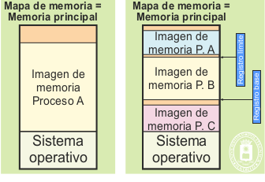
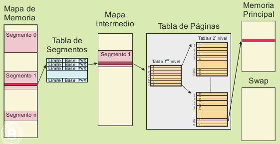

En esta sección se analiza cómo se reparte la memoria del sistema entre los distintos procesos que están ejecutándose en un momento dado. Consideraremos las dos situaciones de memoria real y memoria virtual, analizando los siguientes esquemas de gestión de memoria:
Asignación contigua
Segmentación
Paginación
Segmentación paginada
Dado que todos los procesadores de propósito general actuales incluyen una unidad de gestión de memoria que soporta memoria virtual, los sistemas operativos actuales de propósito general utilizan exclusivamente gestión de memoria basada en memoria virtual. Solamente en sistemas muy sencillos o especiales se aplica la asignación contigua o la segmentación.
Si bien la asignación contigua podría utilizarse tanto en sistemas de memoria real como virtual, solamente se justifica su utilización en sistemas de memoria real. En este caso, el proceso recibe una única zona contigua de memoria principal, delimitada por una dirección de comienzo y un tamaño o una dirección de final, como muestra la siguiente figura
Para el caso de un sistema monoproceso la memoria principal se divide entre la que ocupa el sistema operativo y la disponible
para el proceso.
En el caso de un sistema multiproceso, el gestor de memoria debe buscar un hueco suficientemente grande para albergar al proceso.
Las operaciones de crear y duplicar una imagen requieren buscar una zona libre de la memoria principal donde quepa la imagen.
Eliminar la imagen consiste en marcar como libre la zona de memoria asignada a esa imagen.
Dado que, al crear una imagen, hay que buscar un hueco de memoria principal libre en el que quepa, se produce un nuevo hueco con
el espacio sobrante. Esto conlleva la pérdida de memoria denominada por fragmentación externa, puesto que quedarán huecos pequeños
en los que no quepan nuevos procesos y que, por lo tanto, quedan sin utilizarse. Este problema podría solventarse haciendo lo que
se llama una compactación de memoria, consistente en realojar todos los procesos de forma que queden contiguos, dejando un solo
hueco al final. Sin embargo, esta es una operación muy costosa, por lo que no suele utilizar.
La segmentación es una extensión del sistema contiguo, en el que se le asignan al proceso varias zonas o segmentos de
memoria principal contigua, típicamente, una por región.
Las operaciones de crear y duplicar una imagen requieren buscar, para cada región del proceso, una zona libre
de la memoria principal donde quepa dicha región.
El esquema de gestión basado en memoria virtual es el utilizado prácticamente por la totalidad de los sistemas operativos
de propósito general actuales, como Windows o Linux.
La creación y duplicación de una imagen requiere la creación de la correspondiente tabla de páginas y la creación de las regiones que tenga la imagen.
Eliminar la imagen consiste en eliminar la correspondiente tabla de páginas, recuperando el espacio que ocupa. Además, hay que eliminar las regiones
que componen la imagen, recuperando los recursos de almacenamiento que tengan asignados.
La segmentación paginada consiste en emplear los dos mecanismos descritos anteriormente. Existe un primer nivel de definición de segmentos, y un segundo nivel de paginación, estando cada segmento paginado de forma individual.
Conceptualmente, la segmentación paginada no aporta gran cosa sobre el modelo paginado con tabla de dos o
más niveles analizado en el apartado anterior, puesto que la tabla de primer nivel se puede considerar equivalente a
la tabla de segmentos.
Pocos procesadores implementan este doble mecanismo de traducción de direcciones y los sistemas operativos
no hacen uso del mismo para mejorar su portabilidad. La arquitectura clásica de Intel x86 emplea segmentación paginada
por razones históricas y de compatibilidad hacia modelos más antiguos. Intel introduce la segmentación en
el año 1978 con el 8086 y en el año 1985 con el 80386 introduce la segmentación paginada. La arquitectura de 64
bits x64 Intel considera obsoleta esta solución.